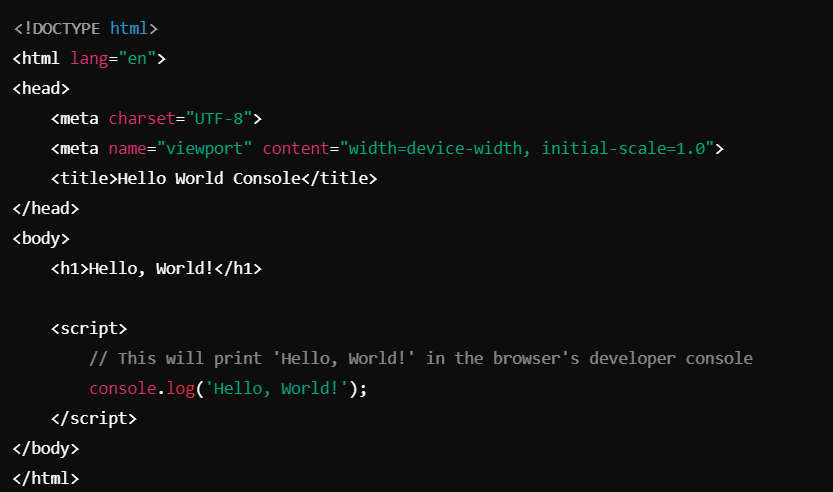

About Me:
Hello, and welcome to my portfolio! My name is David, and I'm passionate about crafting elegant and functional websites that bring ideas to life.
I began my coding journey with a simple line of code:
That one line opened a world of possibilities, sparking my fascination with web development.Over the years, I've honed my skills in HTML, CSS, and JavaScript, and I'm constantly exploring new technologies and frameworks to expand my expertise.
What I Do:
As a Web Developer, my focus is on creating intuitive and visually appealing designs. My goal is to blend creativity and functionality, ensuring that every website I build delivers an excellent user experience. Whether it's a single-page portfolio or a dynamic web application, I enjoy turning ideas into reality.
My Skills:
HTML: Structuring websites with clean, semantic markup.
CSS: Designing responsive and attractive layouts with tools like Flexbox and Grid.
JavaScript: Adding interactivity and dynamic behavior to web pages.
I also love collaborating on projects, brainstorming innovative solutions, and constantly learning about
the
latest trends in web development.